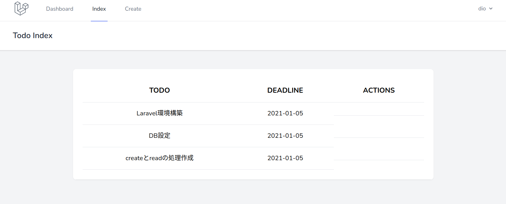
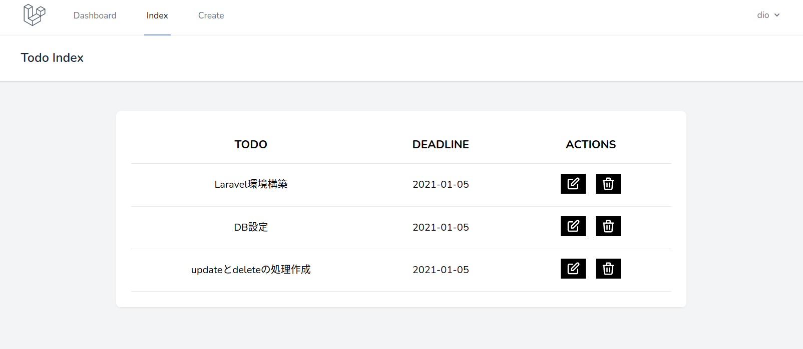

Laravel
LaravelとはPHPのMVCフレームワークである．
フレームワークとは
フレームワークとは．．．
- ある言語で作るシステムの枠組み．考え方．
- よく使う関数やクラスが用意されている．
- 規則が決まっているので，誰が書いても似たコードになる．
メリットとデメリット
- ✅ 組み込まれている機能があるので実装の負荷が少ない．
- ✅ コードの品質担保による保守管理の負荷低減．
- ✅ セキュリティ面での担保．
- 🔼 学習コスト．
- 🔼 環境構築．
各言語のフレームワークの例
| 言語 | フレームワーク |
|---|---|
| PHP | Laravel, CakePHP, Symphony |
| Ruby | Ruby on Rails |
| Python | Django, Flask |
| Node.js | Express, NestJS |
| JavaScript | Next.js, Gatsby.js, Nuxt.js |
※あくまで一例，他にもたくさんあります．．！
Laravelの特徴
- 今最もアツいPHPフレームワーク！
- Webサービスで使用する機能が豊富に用意されている．
- DB操作関連の機能（論理削除など）
- メール通知機能
- 画面を柔軟に作成できるbladeテンプレート．
artisanコマンドによる手軽なライブラリ操作．- とにかく自由（ディレクトリ構成，処理の記述場所など）
MVCとは
MVCとは，役割分担の概念であるッ！
これまでは適当なPHPファイルに処理を全部書いていた！
- ファイル数が増える．．．
- あの処理，どのファイルに書いたっけ．．？？
- バグあったけど次の処理が他の人の書いたファイルに．．．（チーム開発）
=> いずれ詰む未来が見える．．．
=> せや，処理毎に別々のところに書いて管理や分類をしやすくしたろ！MVCの3つくらいでええやろ！
役割分担
| name | 役割 |
|---|---|
| Model | データの操作を行う役割． データの「作成」「参照」「更新」「削除」し，その結果を出力． |
| View | ブラウザの表示領域を作成する役割． 受け取ったデータ処理の結果をhtmlに埋め込み，出力する． |
| Controller | リクエストとレスポンスを行う．その間のことをいい感じにやる． ModelとViewに司令を出す，処理の流れを決める役割． |
| Route | アクセスされたURLに応じて処理を振り分ける．URLとControllerの関数の対応を決める． 実際の処理はControllerを通じてModelやViewが実行する． |
処理のイメージ
MVCでは処理によって役割分担されているため，「処理の順番」と「データ流れ」を把握することが理解への近道である．
例として，DBから取り出したデータを一覧画面に表示する流れを考えてみる．
リクエストからの処理の流れ
リクエスト -> Route -> Controllerの順で処理が実行される．

DBから取り出したデータの流れ
Model -> Controller -> Viewの順で処理が実行される．

コツ
習うより慣れろッ！
- 初見で理解することは不可能！
- まずはアプリケーションを作って動かそう！
- 処理を見ながら，どこでどの処理を行っているのかを考えよう！
- MVC間でのデータの流れを追えるようになるとGood！！
- 慣れゲー & 周回ゲー！
- 何度も作ることで処理のイメージが湧き，余裕が生まれる．
- 「そういえば前回もこの処理書いたな」でOK．
- 10周くらいするとだいぶわかる！
余計なことをせずにフレームワークに従う
フレームワーク > 越えられない壁 >>> 人間
- フレームワークは人類の叡智！
- 素人が安易に改造すると台無し．
- 細かい設定などは弄らない！
- 自分で実装せずにフレームワークに用意された機能を使え！
- ゴリ押しで書くな！（よくある処理はドキュメントに載ってる）
【Docker編】環境構築とLaravel準備
Laravelで開発をするためには，開発環境を用意する必要がある．一人で開発するときだけでなく，複数人で開発する際には「同じ開発環境」を揃えることが大切である．
更に，フレームワークやライブラリを多用する場合，個々のPC環境によって細かいバージョンの差異や動作具合に影響が生じることがある．
主なLaravelの開発環境には以下のようなものがある．
- ローカル環境（XAMPPなど）
- ローカル上の仮想マシン（vagrantなど）
- 仮想コンテナ（Dockerなど）
- クラウド上の仮想マシン（AWS Cloud9など）
今回はLaravel公式が準備する機能を用い，仮想マシン上で開発を行う．
多用するコマンドまとめ
仮想コンテナを立ち上げる
$ ./vendor/bin/sail up -d
仮想コンテナを終了させる
$ ./vendor/bin/sail down
Laravelコンテナへログインする
$ docker-compose exec laravel.test bash
MySQLコンテナへログインする
$ docker-compose exec mysql bash
コンテナからログアウトする
$ exit
Laravelプロジェクト作成
下記コマンドで一撃．laravel_todo部分がプロジェクト名となる．
$ curl -s https://laravel.build/laravel_todo | bash
実行結果
_ _
| | | |
| | __ _ _ __ __ ___ _____| |
| | / _` | '__/ _` \ \ / / _ \ |
| |___| (_| | | | (_| |\ V / __/ |
|______\__,_|_| \__,_| \_/ \___|_|
Warning: TTY mode requires /dev/tty to be read/writable.
Creating a "laravel/laravel" project at "./laravel_todo"
Installing laravel/laravel (v8.5.20)
- Downloading laravel/laravel (v8.5.20)
- Installing laravel/laravel (v8.5.20): Extracting archive
...
途中，Laravel側でいろいろ実行するためPCのログインパスワードを求められるので入力する．
...
Please provide your password so we can make some final adjustments to your application's permissions.
[sudo] password for taroosg:
Thank you! We hope you build something incredible. Dive in with: cd laravel_todo && ./vendor/bin/sail up
権限の変更
この方法でプロジェクトを作成するとエディタで操作する場合に権限で引っかかる場合があるので権限を変更する．
$ sudo chmod -R 777 laravel_todo
権限が変更できない場合は下記URLの設定を行い再度コマンドを実行する．
起動
早速仮想コンテナを立ち上げる．
$ cd laravel_todo
$ ./vendor/bin/sail up -d
実行結果
Creating network "laravel_todo_sail" with driver "bridge"
Creating volume "laravel_todo_sailmysql" with local driver
Creating volume "laravel_todo_sailredis" with local driver
Creating volume "laravel_todo_sailmeilisearch" with local driver
Creating laravel_todo_mailhog_1 ... done
Creating laravel_todo_meilisearch_1 ... done
Creating laravel_todo_redis_1 ... done
Creating laravel_todo_selenium_1 ... done
Creating laravel_todo_mysql_1 ... done
Creating laravel_todo_laravel.test_1 ... done
動作確認
ブラウザでlocalhostにアクセスし，下記画面が表示されればOK．
コマンド実行時にエラーが出る場合や，画面が表示されない場合は以下のケースを確認しよう．
エラーが出る場合
M1のMacでERROR: no matching manifest for linux/arm64/v8 in the manifest list entriesが出る
docker-compoes.ymlに下記を追加
platform: 'linux/x86_64'
追記場所はこのへん
mysql:
image: 'mysql:8.0'
platform: 'linux/x86_64'
参考：https://neoighodaro.com/posts/3-running-laravel-and-docker-on-the-apple-mac-m1
M1のMacでlaravel.test failed的なエラーが出る
エディタでlaravel_todo/vendor/laravel/sail/runtimes/8.0/Dockerfileを開き．34行目と35行目をコメントアウトする．
↓この2行をコメントアウトする
&& curl -sS https://dl.yarnpkg.com/debian/pubkey.gpg | apt-key add - \
&& echo "deb https://dl.yarnpkg.com/debian/ stable main" > /etc/apt/sources.list.d/yarn.list \
いけてそうだけどブラウザで表示できない
アクセスするときのURLをhttps://localhostをhttp://localhostに変更
終了するとき
仮想マシン（コンテナ）を終了させる場合は以下のコマンドを実行する．
$ ./vendor/bin/sail down
ライブラリ準備
ライブラリ準備
作成するアプリケーションでライブラリを使用する場合はコマンドでインストールを行う．今回は認証を実装するためのLaravel Breezeをインストールする．
Laravelのプロジェクト内でコマンドを実行する場合には，下記コマンドで仮想コンテナにログインする必要がある．
$ docker-compose exec laravel.test bash
root@81f8517c4e7f:/var/www/html#
仮想コンテナから出る場合には下記のコマンドを実行する．
root@81f8517c4e7f:/var/www/html# exit
exit
$
以降のコマンドは仮想コンテナにログインした状態（ターミナルが/var/www/html# になっている状態）で行うこと
下記コマンドを実行し，必要なファイルをダウンロードする．
$ composer require laravel/breeze --dev
実行結果
...
Discovered Package: nesbot/carbon
Discovered Package: nunomaduro/collision
Package manifest generated successfully.
73 packages you are using are looking for funding.
Use the `composer fund` command to find out more!
下記コマンドでインストールする．
$ php artisan breeze:install
実行結果
Breeze scaffolding installed successfully.
Please execute the "npm install && npm run dev" command to build your assets.
下記コマンドを実行し，その他必要なパッケージをインストールしてビルドする（ここでNode.jsが動く）．
$ npm install && npm run dev
実行結果（やや時間がかかる）
✔ Compiled Successfully in 4720ms
┌───────────────────────────────────────────────────────────────────┬──────────┐
│ File │ Size │
├───────────────────────────────────────────────────────────────────┼──────────┤
│ /js/app.js │ 673 KiB │
│ css/app.css │ 3.82 MiB │
└───────────────────────────────────────────────────────────────────┴──────────┘
webpack compiled successfully
ブラウザでlocalhostにアクセスし，動作を確認する．
以下の画面が表示されればOK（右上にLoginとregisterが表示される）．

右上のregisterをクリックするとユーザ登録画面に移動するが，まだこの段階ではユーザ登録機能は動作しない．ユーザ登録画面が表示されればOK．

ここまででライブラリの準備は完了．
データベース準備
MySQLの準備
今回のtodoリストアプリケーションでは，DBとしてMySQLを使用する．
すでにMySQL自体は動作する状態になっているが，Laravelから扱うにはいくつかの設定が必要となる．下記手順を実行し，MySQLにログインする．
コンテナへログインしている場合は一旦exitで通常のターミナルに戻って実行すること
DB用のコンテナへログイン
$ docker-compose exec mysql bash
root@d984f6614597:/#
MySQLへログイン
ユーザ名sail，パスワードpasswordでログインできる．
パスワードを求められるので「password」を入力して Enter（パスワードは画面上に表示されないので注意）．
root@d984f6614597:/# mysql -u sail -p
Enter password:
Welcome to the MySQL monitor. Commands end with ; or \g.
Your MySQL connection id is 29
Server version: 8.0.25 MySQL Community Server - GPL
Copyright (c) 2000, 2021, Oracle and/or its affiliates.
Oracle is a registered trademark of Oracle Corporation and/or its
affiliates. Other names may be trademarks of their respective
owners.
Type 'help;' or '\h' for help. Type '\c' to clear the current input statement.
mysql>
DB状況の確認
すでに今回のアプリケーションで使用するデータベースを作成されている．データベース名は laravel_todo（プロジェクト名を同じ）．
下記コマンドを実行してデータベースの一覧を表示する．
mysql> show databases;
+--------------------+
| Database |
+--------------------+
| information_schema |
| laravel_todo |
+--------------------+
2 rows in set (0.03 sec)
確認できたらログアウトする．
mysql> exit;
Bye
LaravelからDBに接続するための準備
続いて，LaravelからMySQLにアクセスするための設定を行う．今回はプロジェクト作成の時点で設定されているため項目の確認のみ行う．
エディタから.envファイルを開く．.envファイルはlaravel_todoディレクトリの直下に配置されている．
DB_CONNECTION=mysql
DB_HOST=mysql
DB_PORT=3306
DB_DATABASE=laravel_todo
DB_USERNAME=sail
DB_PASSWORD=password
それぞれ下記の意味となっている．デプロイする場合などはサービス提供者側からそれぞれ情報が提供されるため，必要に応じて編集する．
| 項目 | 意味 |
|---|---|
| DB_CONNECTION | DBの種類 |
| DB_HOST | DBのホスト名 |
| DB_PORT | DBのポート |
| DB_DATABASE | DB名 |
| DB_USERNAME | DBにログインするときのユーザ名 |
| DB_PASSWORD | DBにログインするときのパスワード |
もし.envファイルを更新する場合はキャッシュをクリアする．
設定ファイルはサーバ起動時にキャッシュに保存されるため，変更した場合は「キャッシュをクリアする」「コンテナを立ち上げ直す」のどちらかが必要になる．
キャッシュクリアのコマンドを実行する場合はLaravelの仮想コンテナにログインした状態で行うこと．
$ php artisan config:cache
実行結果
Configuration cache cleared!
Configuration cached successfully!
phpmyadminの追加
コンテナの停止
コンテナが動いている場合は下記コマンドで停止させる．
$ ./vendor/bin/sail down
phpmyadminのコンテナを追加
docker-compose.ymlに下記を追記する．
phpmyadmin:
image: phpmyadmin/phpmyadmin
links:
- mysql:mysql
ports:
- 8080:80
environment:
MYSQL_USERNAME: "${DB_USERNAME}"
MYSQL_ROOT_PASSWORD: "${DB_PASSWORD}"
PMA_HOST: mysql
networks:
- sail
追記場所は87行目付近．
selenium:
image: "selenium/standalone-chrome"
volumes:
- "/dev/shm:/dev/shm"
networks:
- sail
# この下に追記
動作確認
下記コマンドでコンテナを起動する．
$ ./vendor/bin/sail up -d
立ち上がったら，ブラウザでlocalhost:8080にアクセスするとphpmyadminにアクセスできる．
ユーザ名とパスワードは以下の通り．
| ユーザ名 | パスワード |
|---|---|
sail | password |
注意点
Laravelではテーブルの設定などはマイグレーションによって行うため，phpmyadminで不用意に操作すると予期しないエラーが発生する場合がある．
そのため，カラム名の調整などはphpmyadminから行わないことをオススメする．
レコードの追加などは問題ないので適宜活用していきましょう．
【Docker編】todoアプリケーションの実装
基本的なCRUD処理を実装する．
Laravelでは，テーブル設計，データ操作，画面表示などアプリケーションの流れを一貫して実装することができ，開発を支援するライブラリやコマンドも豊富に用意されている．
todoアプリケーションの実装を通して，これらの機能を体験する．
多用するコマンドまとめ
仮想コンテナを立ち上げる
$ ./vendor/bin/sail up -d
仮想コンテナを終了させる
$ ./vendor/bin/sail down
Laravelコンテナへログインする
$ docker-compose exec laravel.test bash
MySQLコンテナへログインする
$ docker-compose exec mysql bash
コンテナからログアウトする
$ exit
マイグレーションによるテーブル設計
プロダクトの実装を進める上で，Laravelコンテナ内やDBコンテナ内など「実行場所」を確認すること．
テーブル設計（マイグレーション）
📦 Laravelコンテナ内の操作
$ docker-compose exec laravel.test bash root@8544d96d2334:/var/www/html#
今回のアプリケーションはtodoリストなので「todos」テーブルを作成する．
Laravelでは「マイグレーション」という仕組みを使用してテーブルの管理を行う．また，テーブル内のデータは「Model」を使用して操作する．LaravelではEroquent Modelと呼ばれるORMを使用する．
【解説 / マイグレーション】
- マイグレーションとは「マイグレーションファイル」を用いてテーブルを管理する仕組み．
- 「マイグレーションファイル」にテーブル名やカラム名を記述し，指定されたコマンドを実行することで設定したテーブルが生成される．
【解説 / Eloquent Model】
- Eloquent ModelはLaravel標準のORM（object-relational mapper）である．
- ORMとは，DBのレコードをオブジェクトとして直感的に扱えるようにしたもので，SQLを意識せずにプログラムで処理を記述することができる．
- Eloquent Modelは定義された「Model」を用いることで簡単にDBへのデータ保存・取得などを行える．
- 1つのモデルが1つのテーブルに対応する．例えば，
todosテーブルに対してTodoのようにモデルを定義すると自動的に対応する．モデル内に明示的に対応を記述することもできる．- テーブルに対してデータ操作を行う場合，対応するモデルに対して処理を実行することでDB操作を行うことができる．
Modelとマイグレーションファイルは一度に両方とも作成することができる．
下記コマンドはModelを作成するコマンドだが（Todoがモデル名），-mをつけることでマイグレーションファイルも同時に作成できる．この手法を用いることで，Model名とマイグレーションファイル内のテーブル名が自動的に対応する．
早速実行．
$ php artisan make:model Todo -m
実行結果（日付時刻は毎回変わる）
Model created successfully.
Created Migration: 2020_12_31_033638_create_todos_table
laravel_todo/database/migration/2020_12_31_033638_create_todos_table.phpを開く．これがマイグレーションファイルである．
カラムを追加するため，下記にように編集する．今回はtodo，deadline，commentの3カラムを追加する．
カラムを追加するときはデータ型も設定する．todoは文字列（string），deadlineは日付（date），commentはテキスト（text）を設定している．
idははじめから用意されているので設定不要．
【tips】
nullable()を記述することで，入力必須でなくすることができる．他にunique()で重複を禁止することもできる．timestamps()はcreated_atカラムとupdated_atカラムを自動的に設定してくれる．
<?php
use Illuminate\Database\Migrations\Migration;
use Illuminate\Database\Schema\Blueprint;
use Illuminate\Support\Facades\Schema;
class CreateTodosTable extends Migration
{
/**
* Run the migrations.
*
* @return void
*/
public function up()
{
Schema::create('todos', function (Blueprint $table) {
$table->id();
// ↓追加
$table->string('todo');
$table->date('deadline');
$table->text('comment')->nullable();
// ↑ここまで
$table->timestamps();
});
}
/**
* Reverse the migrations.
*
* @return void
*/
public function down()
{
Schema::dropIfExists('todos');
}
}
文字列最大長の変更
これでテーブルの設計は完了だが，MySQLのバージョンによってはエラーが発生するため，次の設定を行う．
/laravel_todo/app/Providers/AppServiceProvider.phpの内容を以下のように編集する．string型の最大長を191に変更する．
【解説】
- この設定が必要かどうかはMySQLのバージョンによる．MySQLのバージョンが
5.7.7以下の場合は必要となる．- Laravelのマイグレーションでは文字列の最大長が
255として実行するが，MySQL5.7.7以下では最大長が191となっているためである．
<?php
namespace App\Providers;
use Illuminate\Support\ServiceProvider;
use Illuminate\Support\Facades\Schema; // 追記
class AppServiceProvider extends ServiceProvider
{
/**
* Register any application services.
*
* @return void
*/
public function register()
{
//
}
/**
* Bootstrap any application services.
*
* @return void
*/
public function boot()
{
Schema::defaultStringLength(191); // 追記
}
}
マイグレーション実行
📦 Laravelコンテナ内の操作
$ docker-compose exec laravel.test bash root@8544d96d2334:/var/www/html#
マイグレーションを実行するとテーブルが作成される．以下のコマンドを実行する．
$ php artisan migrate
実行結果
Migration table created successfully.
Migrating: 2014_10_12_000000_create_users_table
Migrated: 2014_10_12_000000_create_users_table (31.23ms)
Migrating: 2014_10_12_100000_create_password_resets_table
Migrated: 2014_10_12_100000_create_password_resets_table (29.71ms)
Migrating: 2019_08_19_000000_create_failed_jobs_table
Migrated: 2019_08_19_000000_create_failed_jobs_table (30.85ms)
Migrating: 2020_12_31_033638_create_todos_table
Migrated: 2020_12_31_033638_create_todos_table (14.63ms)
エラーになる場合はマイグレーションファイルの内容が間違っていることが多い．修正して以下のコマンドを実行する．
$ php artisan migrate:fresh
【解説】
:freshをつけることで，存在しているテーブルを一旦削除し，再度マイグレーションを実行することができる．- マイグレーションに失敗した場合はエラーが発生するまでに実行された部分はテーブルが作成される．しかし，マイグレーション実行時に，すでに同名のテーブルが存在している場合はエラーになるため，既存テーブルを削除する必要がある．
テーブル確認
📦 MySQLコンテナ内の操作
$ docker-compose exec mysql bash root@d984f6614597:/#
うまくいったら，mysqlにログインしてテーブルを確認する．パスワードはpassword．
$ mysql -u sail -p
mysql> use laravel_todo;
Reading table information for completion of table and column names
You can turn off this feature to get a quicker startup with -A
Database changed
mysql> show tables;
+------------------------+
| Tables_in_laravel_todo |
+------------------------+
| failed_jobs |
| migrations |
| password_resets |
| todos |
| users |
+------------------------+
5 rows in set (0.00 sec)
mysql> desc todos;
+------------+-----------------+------+-----+---------+----------------+
| Field | Type | Null | Key | Default | Extra |
+------------+-----------------+------+-----+---------+----------------+
| id | bigint unsigned | NO | PRI | NULL | auto_increment |
| todo | varchar(191) | NO | | NULL | |
| deadline | date | NO | | NULL | |
| comment | text | YES | | NULL | |
| created_at | timestamp | YES | | NULL | |
| updated_at | timestamp | YES | | NULL | |
+------------+-----------------+------+-----+---------+----------------+
6 rows in set (0.02 sec)
mysql> exit;
Bye
この段階で，ユーザテーブルなどの認証に使用するテーブルも用意された状態となる．
ブラウザのLaravel画面右上registerから適当にユーザを登録しておこう．
【tips】
example.comを使用する．これはテスト用に用意されているドメインであり，誰かのメールアドレスを使用してしまうリスクを回避できる．
ユーザ登録が完了すると，下記の画面が表示される．

ルーティングとコントローラ
Laravelでは，クライアントからリクエストされたURLに対して，どの関数を実行するかを決める．この対応を決定するのが「ルーティング」であり，実際に実行される関数を記述するのが「コントローラ」である．
ルーティングとコントローラの作成
📦 Laravelコンテナ内の操作
$ docker-compose exec laravel.test bash root@8544d96d2334:/var/www/html#
コントローラとルーティングを作成する．今回のコントローラ名はTodoControllerとする．
--resourceをつけることで，よく使用する処理（代表的なCRUD処理）を一括して作成することができる．
下記コマンドを実行する．
$ php artisan make:controller TodoController --resource
実行結果
Controller created successfully.
これでコントローラファイルが作成された．続いてルーティングを作成する．
ルーティングファイルはlaravel_todo/routes以下に配置される．
/laravel_todo/routes/web.phpを以下のように編集する．
<?php
use Illuminate\Support\Facades\Route;
// 下記1行を追記
use App\Http\Controllers\TodoController;
Route::get('/', function () {
return view('welcome');
});
// 下記1行を追記
Route::resource('todo', TodoController::class);
Route::get('/dashboard', function () {
return view('dashboard');
})->middleware(['auth'])->name('dashboard');
require __DIR__ . '/auth.php';
ルーティングの一覧は下記で確認できる．
$ php artisan route:list
実行結果（ユーザ操作などのルーティングは省略）
【解説】
この表は非常に重要．
- 例えば，
/todo/にGETでリクエストが来た場合，TodoControllerのindex関数が動作することを示している．- このように，URLと動作する関数の対応を決めているのがルーティングである．
+--------+-----------+---------------------------------+---------------------+------------------------------------------------+--------------+
| Domain | Method | URI | Name | Action | Middleware |
+--------+-----------+---------------------------------+---------------------+------------------------------------------------+--------------+
| | GET|HEAD | todo | todo.index | App\Http\Controllers\TodoController@index | web |
| | POST | todo | todo.store | App\Http\Controllers\TodoController@store | web |
| | GET|HEAD | todo/create | todo.create | App\Http\Controllers\TodoController@create | web |
| | GET|HEAD | todo/{todo} | todo.show | App\Http\Controllers\TodoController@show | web |
| | PUT|PATCH | todo/{todo} | todo.update | App\Http\Controllers\TodoController@update | web |
| | DELETE | todo/{todo} | todo.destroy | App\Http\Controllers\TodoController@destroy | web |
| | GET|HEAD | todo/{todo}/edit | todo.edit | App\Http\Controllers\TodoController@edit | web |
+--------+-----------+---------------------------------+---------------------+------------------------------------------------+--------------+
これで，ルーティング部分は完了である．
コントローラの実装（一部）
URLにリクエストが来た場合に実行される関数はコントローラに記述される．まずはリクエストが来た場合に特定の画面を表示するよう処理を記述する．
コントローラはlaravel_todo/app/Http/Controllers以下に配置される．
/laravel_todo/app/Http/Controllers/TodoController.phpの内容を以下のように編集する．
view()関数は指定したビューファイル（画面）を表示する．todo.indexはtodoフォルダのindex.blade.phpの意味．ビューファイルは次項で作成する．
<?php
namespace App\Http\Controllers;
use Illuminate\Http\Request;
// 下記2行を追加
use Validator;
use App\Models\Todo;
class TodoController extends Controller
{
/**
* Display a listing of the resource.
*
* @return \Illuminate\Http\Response
*/
public function index()
{
// 追加
return view('todo.index');
}
/**
* Show the form for creating a new resource.
*
* @return \Illuminate\Http\Response
*/
public function create()
{
// 追記
return view('todo.create');
}
// 以降は変更なし
}
必要な画面の作成
共通画面の作成
実際にブラウザ画面に表示される内容を記述する．ビューファイルは*.blade.phpの形式で作成する．これは「bladeテンプレート」と呼ばれる形式であり，コントローラとのデータのやり取りなどに最適化されている．
ビューファイルはlatavel_todo/resources/viewsディレクトリ以下に配置する．
bladeテンプレートでは共通パーツと個別パーツを組み合わせて画面を構成する．例えば，アプリケーション全体を通して表示されるナビゲーションバーやエラー画面などは共通パーツである．
それぞれのパーツは「コンポーネント」と呼ばれる．
共通パーツ（エラー表示）の作成
入力値が不正な場合などはエラー画面を表示して対応する．
todoの入力や編集など複数の画面で必要となるため，共通のコンポーネントとして作成する．
latavel_todo/resources/viewsの中にcommonフォルダを作成する．
commonフォルダの中にerrors.blade.phpファイルを作成する．
errors.blade.phpに以下の内容を記述する．
@if (count($errors) > 0)
<div>
<div class="font-medium text-red-600">
{{ __('Whoops! Something went wrong.') }}
</div>
<ul class="mt-3 list-disc list-inside text-sm text-red-600">
@foreach ($errors->all() as $error)
<li>{{ $error }}</li>
@endforeach
</ul>
</div>
@endif
共通パーツ（ナビゲーションバー）の調整
ナビゲーションバーもアプリケーションを通じて使用するため，共通パーツとして作成する．
「todo一覧」と「todo作成」の 2 種類のリンクを作成しておく．
laravel_todo/resources/views/layouts/navigation.blade.phpの内容を以下のように編集する．
全部で4箇所追記があるので注意．
<nav x-data="{ open: false }" class="bg-white border-b border-gray-100">
<!-- Primary Navigation Menu -->
<div class="max-w-7xl mx-auto px-4 sm:px-6 lg:px-8">
<div class="flex justify-between h-16">
<div class="flex">
<!-- Logo -->
<div class="flex-shrink-0 flex items-center">
<a href="{{ route('dashboard') }}">
<x-application-logo class="block h-10 w-auto fill-current text-gray-600" />
</a>
</div>
<!-- Navigation Links -->
<div class="hidden space-x-8 sm:-my-px sm:ml-10 sm:flex">
<x-nav-link :href="route('dashboard')" :active="request()->routeIs('dashboard')">
{{ __('Dashboard') }}
</x-nav-link>
</div>
<!-- ↓一覧ページへのリンクを追加 -->
<div class="hidden space-x-8 sm:-my-px sm:ml-10 sm:flex">
<x-nav-link :href="route('todo.index')" :active="request()->routeIs('todo.index')">
{{ __('Index') }}
</x-nav-link>
</div>
<!-- ↓作成ページへのリンクを追加 -->
<div class="hidden space-x-8 sm:-my-px sm:ml-10 sm:flex">
<x-nav-link :href="route('todo.create')" :active="request()->routeIs('todo.create')">
{{ __('Create') }}
</x-nav-link>
</div>
</div>
<!-- Settings Dropdown -->
<div class="hidden sm:flex sm:items-center sm:ml-6">
<x-dropdown align="right" width="48">
<x-slot name="trigger">
<button class="flex items-center text-sm font-medium text-gray-500 hover:text-gray-700 hover:border-gray-300 focus:outline-none focus:text-gray-700 focus:border-gray-300 transition duration-150 ease-in-out">
<div>{{ Auth::user()->name }}</div>
<div class="ml-1">
<svg class="fill-current h-4 w-4" xmlns="http://www.w3.org/2000/svg" viewBox="0 0 20 20">
<path fill-rule="evenodd" d="M5.293 7.293a1 1 0 011.414 0L10 10.586l3.293-3.293a1 1 0 111.414 1.414l-4 4a1 1 0 01-1.414 0l-4-4a1 1 0 010-1.414z" clip-rule="evenodd" />
</svg>
</div>
</button>
</x-slot>
<x-slot name="content">
<!-- Authentication -->
<form method="POST" action="{{ route('logout') }}">
@csrf
<x-dropdown-link :href="route('logout')" onclick="event.preventDefault();
this.closest('form').submit();">
{{ __('Logout') }}
</x-dropdown-link>
</form>
</x-slot>
</x-dropdown>
</div>
<!-- Hamburger -->
<div class="-mr-2 flex items-center sm:hidden">
<button @click="open = ! open" class="inline-flex items-center justify-center p-2 rounded-md text-gray-400 hover:text-gray-500 hover:bg-gray-100 focus:outline-none focus:bg-gray-100 focus:text-gray-500 transition duration-150 ease-in-out">
<svg class="h-6 w-6" stroke="currentColor" fill="none" viewBox="0 0 24 24">
<path :class="{'hidden': open, 'inline-flex': ! open }" class="inline-flex" stroke-linecap="round" stroke-linejoin="round" stroke-width="2" d="M4 6h16M4 12h16M4 18h16" />
<path :class="{'hidden': ! open, 'inline-flex': open }" class="hidden" stroke-linecap="round" stroke-linejoin="round" stroke-width="2" d="M6 18L18 6M6 6l12 12" />
</svg>
</button>
</div>
</div>
</div>
<!-- Responsive Navigation Menu -->
<div :class="{'block': open, 'hidden': ! open}" class="hidden sm:hidden">
<div class="pt-2 pb-3 space-y-1">
<x-responsive-nav-link :href="route('dashboard')" :active="request()->routeIs('dashboard')">
{{ __('Dashboard') }}
</x-responsive-nav-link>
</div>
<!-- ↓一覧ページへのリンクを追加 -->
<div class="pt-2 pb-3 space-y-1">
<x-responsive-nav-link :href="route('todo.index')" :active="request()->routeIs('todo.index')">
{{ __('Index') }}
</x-responsive-nav-link>
</div>
<!-- ↓作成ページへのリンクを追加 -->
<div class="pt-2 pb-3 space-y-1">
<x-responsive-nav-link :href="route('todo.create')" :active="request()->routeIs('todo.create')">
{{ __('Create') }}
</x-responsive-nav-link>
</div>
<!-- Responsive Settings Options -->
<div class="pt-4 pb-1 border-t border-gray-200">
<div class="flex items-center px-4">
<div class="flex-shrink-0">
<svg class="h-10 w-10 fill-current text-gray-400" xmlns="http://www.w3.org/2000/svg" fill="none" viewBox="0 0 24 24" stroke="currentColor">
<path stroke-linecap="round" stroke-linejoin="round" stroke-width="2" d="M16 7a4 4 0 11-8 0 4 4 0 018 0zM12 14a7 7 0 00-7 7h14a7 7 0 00-7-7z" />
</svg>
</div>
<div class="ml-3">
<div class="font-medium text-base text-gray-800">{{ Auth::user()->name }}</div>
<div class="font-medium text-sm text-gray-500">{{ Auth::user()->email }}</div>
</div>
</div>
<div class="mt-3 space-y-1">
<!-- Authentication -->
<form method="POST" action="{{ route('logout') }}">
@csrf
<x-responsive-nav-link :href="route('logout')" onclick="event.preventDefault();
this.closest('form').submit();">
{{ __('Logout') }}
</x-responsive-nav-link>
</form>
</div>
</div>
</div>
</nav>
【解説】
- Laravel8のビューは CSS フレームワークの
tailwind.cssを使用している．- 予め用意されたクラス名を記述するだけでスタイルを適用できるので，ドキュメントを読みながらスタイルを変更してみよう．
画面をリロードすると下記のようにナビゲーションが設置された状態となる（一覧ページと作成ページはまだ作成していないので動作しない点に注意）．

todo作成画面の作成
まず，latavel_todo/resources/viewsの中にtodoフォルダを作成する．
続いて，todoフォルダの中に以下のファイルを作成する．今後必要になる画面のファイルも合わせて作成している．
index.blade.php（todo一覧画面）create.blade.php（todo作成画面）show.blade.php（todo詳細画面）edit.blade.php（todo編集画面）
ファイルを作成したらcreate.blade.phpを以下のように編集する．
<x-app-layout>
<x-slot name="header">
<h2 class="font-semibold text-xl text-gray-800 leading-tight">
{{ __('Create New Todo') }}
</h2>
</x-slot>
<div class="py-12">
<div class="max-w-7xl mx-auto sm:w-8/12 md:w-1/2 lg:w-5/12">
<div class="bg-white overflow-hidden shadow-sm sm:rounded-lg">
<div class="p-6 bg-white border-b border-gray-200">
@include('common.errors')
<form class="mb-6" action="{{ route('todo.store') }}" method="POST">
@csrf
<div class="flex flex-col mb-4">
<label class="mb-2 uppercase font-bold text-lg text-grey-darkest" for="todo">Todo</label>
<input class="border py-2 px-3 text-grey-darkest" type="text" name="todo" id="todo">
</div>
<div class="flex flex-col mb-4">
<label class="mb-2 uppercase font-bold text-lg text-grey-darkest" for="deadline">Deadline</label>
<input class="border py-2 px-3 text-grey-darkest" type="date" name="deadline" id="deadline">
</div>
<div class="flex flex-col mb-4">
<label class="mb-2 uppercase font-bold text-lg text-grey-darkest" for="comment">Comment</label>
<input class="border py-2 px-3 text-grey-darkest" type="text" name="comment" id="comment">
</div>
<button type="submit" class="w-full py-3 mt-6 font-medium tracking-widest text-white uppercase bg-black shadow-lg focus:outline-none hover:bg-gray-900 hover:shadow-none">
Create
</button>
</form>
</div>
</div>
</div>
</div>
</x-app-layout>
【解説】
route('todo.store')はTodoControllerのstore()関数にデータを送ることを示している．@csrfはセキュリティ対策．フォームからデータを送信するときには必ず記述すること．
編集したらブラウザからlocalhost/todo/createにアクセスして動作確認．
下記画面になっていればOK．

todo一覧画面の作成
続いて，index.blade.phpを以下のように編集する．
<x-app-layout>
<x-slot name="header">
<h2 class="font-semibold text-xl text-gray-800 leading-tight">
{{ __('Todo Index') }}
</h2>
</x-slot>
<div class="py-12">
<div class="max-w-7xl mx-auto sm:w-10/12 md:w-8/10 lg:w-8/12">
<div class="bg-white overflow-hidden shadow-sm sm:rounded-lg">
<div class="p-6 bg-white border-b border-gray-200">
<table class="text-center w-full border-collapse">
<thead>
<tr>
<th class="py-4 px-6 bg-grey-lightest font-bold uppercase text-lg text-grey-dark border-b border-grey-light">todo</th>
<th class="py-4 px-6 bg-grey-lightest font-bold uppercase text-lg text-grey-dark border-b border-grey-light">deadline</th>
<th class="py-4 px-6 bg-grey-lightest font-bold uppercase text-lg text-grey-dark border-b border-grey-light">actions</th>
</tr>
</thead>
<tbody>
@foreach ($todos as $todo)
<tr class="hover:bg-grey-lighter">
<td class="py-4 px-6 border-b border-grey-light">
<p>{{$todo->todo}}</p>
</td>
<td class="py-4 px-6 border-b border-grey-light">{{$todo->deadline}}</td>
<td class="py-4 px-6 border-b border-grey-light flex justify-center">
<!-- 更新ボタン -->
<!-- 削除ボタン -->
</td>
</tr>
@endforeach
</tbody>
</table>
</div>
</div>
</div>
</div>
</x-app-layout>
こちらはエラーが発生する．

コントローラから$todosという名前でデータを受け取るよう記述しているが，コントローラからデータが送られていないためである．
とりあえず空のデータを送るように/laravel_todo/app/Http/Controllers/TodoController.phpのindex()を内容を以下のように編集する．
【解説】
view()関数の第 2 引数に渡したいデータを配列で記述する．- ここでは「
todos」という名前で「空の配列」を送っている．- ビューファイル側では
$todosとすることで渡されたデータを使うことができる．- また，変数などのデータは
var_dump()またはdd()またはddd()で確認することができる．これらを使ってデータの構造を確認しながら進めると良いだろう．
public function index()
{
return view('todo.index', [
'todos' => []
]);
}
編集したらブラウザからlocalhost/todoにアクセスして動作確認．
下記画面になっていれば OK．
データ作成処理の実装
必要な画面を揃えたので，作成ページから実際に DB にデータを保存できるようにする．
Modelの編集
Modelの役割は「DBとのデータをやり取り」である．ModelにはDBからどのようにデータを取得するか，などの処理を記述する．
ただし，Modelには予め使用頻度の高い処理（基本的なCRUD）が用意されているため，今回記述するコードはそれほど多くない．
まず，テーブル対して，Laravel側からデータの作成や編集が行えないカラムを設定する．
これはクライアントから送信されてくるデータがIDやユーザ権限などの情報を書き換えてしまうリスクを低減させるためである．
laravel_todo/app/Models/Todo.phpを以下のように編集する．
<?php
namespace App\Models;
use Illuminate\Database\Eloquent\Factories\HasFactory;
use Illuminate\Database\Eloquent\Model;
class Todo extends Model
{
use HasFactory;
// アプリケーション側でcreateなどできない値を記述
// ↓以下の処理を記述
protected $guarded = [
'id',
'created_at',
'updated_at',
];
}
【解説】
$guardedはアプリケーション側から変更できないカラムを指定する（ブラックリスト）．- 対して，
$fillableはアプリケーション側から変更できるカラムを指定する（ホワイトリスト）．- どちらを使用しても良いが，どちらかを使用する必要がある．
Controllerの編集
続いて，コントローラに「Modelに対しての命令」を記述する．DBとやり取りする関数はすでに定義されているのでモデル側に新たな記述は必要ない．
/laravel_todo/app/Http/Controllers/TodoController.phpのstore()を内容を以下のように編集する．
public function store(Request $request)
{
// バリデーション
$validator = Validator::make($request->all(), [
'todo' => 'required | max:191',
'deadline' => 'required',
]);
// バリデーション:エラー
if ($validator->fails()) {
return redirect()
->route('todo.create')
->withInput()
->withErrors($validator);
}
// create()は最初から用意されている関数
// 戻り値は挿入されたレコードの情報
$result = Todo::create($request->all());
// ルーティング「todo.index」にリクエスト送信（一覧ページに移動）
return redirect()->route('todo.index');
}
【解説】
create.blade.phpから送信されていたデータは$requestに入っている．$request->all()とすることで全部取得することができる．redirect()->route('todo.index')は指定したコントローラの関数を動かす．今回はTodoControllerのindex()関数．
データ一覧画面の実装
一覧画面では締切が早い順にソートしてデータを表示する．
Modelの処理
まず，上記の条件でデータを取得する関数を Modelに作成する．
laravel_todo/app/Models/Todo.phpに以下の関数を作成する．
public static function getAllOrderByDeadline()
{
return self::orderBy('deadline', 'asc')->get();
}
【解説】
selfは Todoモデルのこと．orderBy()はSQLのものと同じ理解でOK．- 最後の
get()がないと実行されないので注意．
Controllerを編集
/laravel_todo/app/Http/Controllers/TodoController.phpのindex()を内容を以下のように編集する．
public function index()
{
// モデルに定義した関数を実行する．
$todos = Todo::getAllOrderByDeadline();
return view('todo.index', [
'todos' => $todos
]);
}
todo作成画面でデータを入力して送信すると，自動的に一覧画面に切り替わる．

自分が入力したデータが表示されていればOK．何件かデータを入れておこう．

データ詳細画面の実装
詳細画面はtodoの1件を個別に表示する．
一覧画面に詳細画面へのリンクを作成
各todoの詳細を取得する処理と表示する画面を作成する．
一覧画面のtodo名をクリックすると詳細画面に移動するようにする．
クリックするとコントローラのshow()関数にリクエストを送るように記述している．
index.blade.phpを以下のように編集する．
<x-app-layout>
<x-slot name="header">
<h2 class="font-semibold text-xl text-gray-800 leading-tight">
{{ __('Todo Index') }}
</h2>
</x-slot>
<div class="py-12">
<div class="max-w-7xl mx-auto sm:w-10/12 md:w-8/10 lg:w-8/12">
<div class="bg-white overflow-hidden shadow-sm sm:rounded-lg">
<div class="p-6 bg-white border-b border-gray-200">
<table class="text-center w-full border-collapse">
<thead>
<tr>
<th class="py-4 px-6 bg-grey-lightest font-bold uppercase text-lg text-grey-dark border-b border-grey-light">todo</th>
<th class="py-4 px-6 bg-grey-lightest font-bold uppercase text-lg text-grey-dark border-b border-grey-light">deadline</th>
<th class="py-4 px-6 bg-grey-lightest font-bold uppercase text-lg text-grey-dark border-b border-grey-light">actions</th>
</tr>
</thead>
<tbody>
@foreach ($todos as $todo)
<tr class="hover:bg-grey-lighter">
<td class="py-4 px-6 border-b border-grey-light">
<!-- ↓ここがリンクになるように編集する -->
<a href="{{ route('todo.show',$todo->id) }}">{{$todo->todo}}</a>
</td>
<td class="py-4 px-6 border-b border-grey-light">{{$todo->deadline}}</td>
<td class="py-4 px-6 border-b border-grey-light flex justify-center">
<!-- 更新ボタン -->
<!-- 削除ボタン -->
</td>
</tr>
@endforeach
</tbody>
</table>
</div>
</div>
</div>
</div>
</x-app-layout>
指定した1件のデータを取得する処理を追加
show()関数では，IDを指定して1件のデータを取得したい．
/laravel_todo/app/Http/Controllers/TodoController.phpのshow()を内容を以下のように編集する．
public function show($id)
{
$todo = Todo::find($id);
return view('todo.show', ['todo' => $todo]);
}
ここでは，受け取ったIDの値でテーブルからデータを取り出し，todoという名前でshow.blade.phpに渡している．
詳細表示画面の作成
詳細画面のshow.blade.phpを以下のように編集する．
<x-app-layout>
<x-slot name="header">
<h2 class="font-semibold text-xl text-gray-800 leading-tight">
{{ __('Show Todo Detail') }}
</h2>
</x-slot>
<div class="py-12">
<div class="max-w-7xl mx-auto sm:w-8/12 md:w-1/2 lg:w-5/12">
<div class="bg-white overflow-hidden shadow-sm sm:rounded-lg">
<div class="p-6 bg-white border-b border-gray-200">
<div class="mb-6">
<div class="flex flex-col mb-4">
<p class="mb-2 uppercase font-bold text-lg text-grey-darkest">Todo</p>
<p class="py-2 px-3 text-grey-darkest" id="todo">
{{$todo->todo}}
</p>
</div>
<div class="flex flex-col mb-4">
<p class="mb-2 uppercase font-bold text-lg text-grey-darkest">Deadline</p>
<p class="py-2 px-3 text-grey-darkest" id="deadline">
{{$todo->deadline}}
</p>
</div>
<div class="flex flex-col mb-4">
<p class="mb-2 uppercase font-bold text-lg text-grey-darkest">Comment</p>
<p class="py-2 px-3 text-grey-darkest" id="comment">
{{$todo->comment}}
</p>
</div>
<a href="{{ route('todo.index') }}" class="block text-center w-full py-3 mt-6 font-medium tracking-widest text-white uppercase bg-black shadow-lg focus:outline-none hover:bg-gray-900 hover:shadow-none">
Back
</a>
</div>
</div>
</div>
</div>
</div>
</x-app-layout>
一覧画面で各todoをクリックし，下記のように詳細画面が表示されればOK．

データ削除処理の実装
一覧画面に削除ボタンを設置し，クリックしたら該当するデータを削除できるようにする．
一覧画面に削除ボタンを追加
index.blade.phpを以下のように編集する．
<x-app-layout>
<x-slot name="header">
<h2 class="font-semibold text-xl text-gray-800 leading-tight">
{{ __('Todo Index') }}
</h2>
</x-slot>
<div class="py-12">
<div class="max-w-7xl mx-auto sm:w-10/12 md:w-8/10 lg:w-8/12">
<div class="bg-white overflow-hidden shadow-sm sm:rounded-lg">
<div class="p-6 bg-white border-b border-gray-200">
<table class="text-center w-full border-collapse">
<thead>
<tr>
<th class="py-4 px-6 bg-grey-lightest font-bold uppercase text-lg text-grey-dark border-b border-grey-light">todo</th>
<th class="py-4 px-6 bg-grey-lightest font-bold uppercase text-lg text-grey-dark border-b border-grey-light">deadline</th>
<th class="py-4 px-6 bg-grey-lightest font-bold uppercase text-lg text-grey-dark border-b border-grey-light">actions</th>
</tr>
</thead>
<tbody>
@foreach ($todos as $todo)
<tr class="hover:bg-grey-lighter">
<td class="py-4 px-6 border-b border-grey-light">
<a href="{{ route('todo.show',$todo->id) }}">{{$todo->todo}}</a>
</td>
<td class="py-4 px-6 border-b border-grey-light">{{$todo->deadline}}</td>
<td class="py-4 px-6 border-b border-grey-light flex justify-center">
<!-- 更新ボタン -->
<!-- 削除ボタン -->
<form action="{{ route('todo.destroy',$todo->id) }}" method="POST">
@method('delete')
@csrf
<button type="submit" class="mr-2 ml-2 text-sm bg-black hover:bg-gray-900 hover:shadow-none text-white py-1 px-2 focus:outline-none focus:shadow-outline">
<svg class="h-6 w-6 text-gray-500" fill="none" viewBox="0 0 24 24" stroke="white">
<path stroke-linecap="round" stroke-linejoin="round" stroke-width="2" d="M19 7l-.867 12.142A2 2 0 0116.138 21H7.862a2 2 0 01-1.995-1.858L5 7m5 4v6m4-6v6m1-10V4a1 1 0 00-1-1h-4a1 1 0 00-1 1v3M4 7h16" />
</svg>
</button>
</form>
</td>
</tr>
@endforeach
</tbody>
</table>
</div>
</div>
</div>
</div>
</x-app-layout>
【解説】
- 削除ボタンクリック時には，コントローラの
destroy()関数にリクエストが送られる．- 削除の処理を行うには
DELETEメソッドでリクエストを送る必要があるが，formからはGETまたはPOSTでしか送れない．@method('delete')を記述することで，DELETEメソッドで送信できる．
一覧画面を確認し，削除ボタンが表示されていればOK．

指定したデータを削除する処理の作成
まずIDで指定したデータを1件抽出し，そのデータを削除する，という流れ．
/laravel_todo/app/Http/Controllers/TodoController.phpのdestroy()を内容を以下のように編集する．
public function destroy($id)
{
$result = Todo::find($id)->delete();
return redirect()->route('todo.index');
}
動作させて確認する．削除ボタンをクリックし，該当するデータが削除されればOK．
データ更新処理の実装
更新処理は
- 一覧画面に編集ボタンを設置．
- 編集ボタンをクリックしたら編集画面に移動.
- 編集画面でデータを書き換え，送信ボタンクリックでDBのデータを更新する．
一覧画面に編集ボタンを追加
index.blade.phpを以下のように編集する．
<x-app-layout>
<x-slot name="header">
<h2 class="font-semibold text-xl text-gray-800 leading-tight">
{{ __('Todo Index') }}
</h2>
</x-slot>
<div class="py-12">
<div class="max-w-7xl mx-auto sm:w-10/12 md:w-8/10 lg:w-8/12">
<div class="bg-white overflow-hidden shadow-sm sm:rounded-lg">
<div class="p-6 bg-white border-b border-gray-200">
<table class="text-center w-full border-collapse">
<thead>
<tr>
<th class="py-4 px-6 bg-grey-lightest font-bold uppercase text-lg text-grey-dark border-b border-grey-light">todo</th>
<th class="py-4 px-6 bg-grey-lightest font-bold uppercase text-lg text-grey-dark border-b border-grey-light">deadline</th>
<th class="py-4 px-6 bg-grey-lightest font-bold uppercase text-lg text-grey-dark border-b border-grey-light">actions</th>
</tr>
</thead>
<tbody>
@foreach ($todos as $todo)
<tr class="hover:bg-grey-lighter">
<td class="py-4 px-6 border-b border-grey-light">
<a href="{{ route('todo.show',$todo->id) }}">{{$todo->todo}}</a>
</td>
<td class="py-4 px-6 border-b border-grey-light">{{$todo->deadline}}</td>
<td class="py-4 px-6 border-b border-grey-light flex justify-center">
<!-- 更新ボタン -->
<form action="{{ route('todo.edit',$todo->id) }}" method="GET">
@csrf
<button type="submit" class="mr-2 ml-2 text-sm bg-black hover:bg-gray-900 hover:shadow-none text-white py-1 px-2 focus:outline-none focus:shadow-outline">
<svg class="h-6 w-6 text-gray-500" fill="none" viewBox="0 0 24 24" stroke="white">
<path stroke-linecap="round" stroke-linejoin="round" stroke-width="2" d="M11 5H6a2 2 0 00-2 2v11a2 2 0 002 2h11a2 2 0 002-2v-5m-1.414-9.414a2 2 0 112.828 2.828L11.828 15H9v-2.828l8.586-8.586z" />
</svg>
</button>
</form>
<!-- 削除ボタン -->
<form action="{{ route('todo.destroy',$todo->id) }}" method="POST">
@method('delete')
@csrf
<button type="submit" class="mr-2 ml-2 text-sm bg-black hover:bg-gray-900 hover:shadow-none text-white py-1 px-2 focus:outline-none focus:shadow-outline">
<svg class="h-6 w-6 text-gray-500" fill="none" viewBox="0 0 24 24" stroke="white">
<path stroke-linecap="round" stroke-linejoin="round" stroke-width="2" d="M19 7l-.867 12.142A2 2 0 0116.138 21H7.862a2 2 0 01-1.995-1.858L5 7m5 4v6m4-6v6m1-10V4a1 1 0 00-1-1h-4a1 1 0 00-1 1v3M4 7h16" />
</svg>
</button>
</form>
</td>
</tr>
@endforeach
</tbody>
</table>
</div>
</div>
</div>
</div>
</x-app-layout>
一覧画面に編集ボタンが表示されていればOK．

更新画面に移動する処理の作成
/laravel_todo/app/Http/Controllers/TodoController.phpのedit()を内容を以下のように編集する．
public function edit($id)
{
$todo = Todo::find($id);
return view('todo.edit', ['todo' => $todo]);
}
やっていることはcreate()関数と同様．
更新画面の作成
edit.blade.phpを以下のように編集する．
<x-app-layout>
<x-slot name="header">
<h2 class="font-semibold text-xl text-gray-800 leading-tight">
{{ __('Edit Todo') }}
</h2>
</x-slot>
<div class="py-12">
<div class="max-w-7xl mx-auto sm:w-8/12 md:w-1/2 lg:w-5/12">
<div class="bg-white overflow-hidden shadow-sm sm:rounded-lg">
<div class="p-6 bg-white border-b border-gray-200">
@include('common.errors')
<form class="mb-6" action="{{ route('todo.update',$todo->id) }}" method="POST">
@method('put')
@csrf
<div class="flex flex-col mb-4">
<label class="mb-2 uppercase font-bold text-lg text-grey-darkest" for="todo">Todo</label>
<input class="border py-2 px-3 text-grey-darkest" type="text" name="todo" id="todo" value="{{$todo->todo}}">
</div>
<div class="flex flex-col mb-4">
<label class="mb-2 uppercase font-bold text-lg text-grey-darkest" for="deadline">Deadline</label>
<input class="border py-2 px-3 text-grey-darkest" type="date" name="deadline" id="deadline" value="{{$todo->deadline}}">
</div>
<div class="flex flex-col mb-4">
<label class="mb-2 uppercase font-bold text-lg text-grey-darkest" for="comment">Comment</label>
<input class="border py-2 px-3 text-grey-darkest" type="text" name="comment" id="comment" value="{{$todo->comment}}">
</div>
<div class="flex justify-evenly">
<a href="{{ route('todo.index') }}" class="block text-center w-5/12 py-3 mt-6 font-medium tracking-widest text-black uppercase bg-gray-100 shadow-sm focus:outline-none hover:bg-gray-200 hover:shadow-none">
Back
</a>
<button type="submit" class="w-5/12 py-3 mt-6 font-medium tracking-widest text-white uppercase bg-black shadow-lg focus:outline-none hover:bg-gray-900 hover:shadow-none">
Update
</button>
</div>
</form>
</div>
</div>
</div>
</div>
</x-app-layout>
一覧画面の更新ボタンをクリックし，現在のデータが表示されていればOK．

指定したデータを更新する処理の作成
編集画面でデータを書き換え，コントローラのupdate()関数にデータを送信し，DBのデータを更新する．
/laravel_todo/app/Http/Controllers/TodoController.phpのupdate()を内容を以下のように編集する．
public function update(Request $request, $id)
{
//バリデーション
$validator = Validator::make($request->all(), [
'todo' => 'required | max:191',
'deadline' => 'required',
]);
//バリデーション:エラー
if ($validator->fails()) {
return redirect()
->route('todo.edit', $id)
->withInput()
->withErrors($validator);
}
//データ更新処理
// updateは更新する情報がなくても更新が走る（updated_atが更新される）
$result = Todo::find($id)->update($request->all());
// fill()save()は更新する情報がない場合は更新が走らない（updated_atが更新されない）
// $redult = Todo::find($id)->fill($request->all())->save();
return redirect()->route('todo.index');
}
編集画面で書き換えたデータに更新されればOK．

ユーザ情報の利用
はじめのほうで，ユーザ認証を行うbreezeライブラリをインストールしたため，これを利用してユーザ管理を行う．
まず，認証ユーザのみがアプリケーションの機能を利用できるように処理を変更する．
続いて，データ作成時にユーザ情報を含めることで，ログインユーザが作成したデータのみを扱えるように処理を変更する．
ログインしていないユーザはアプリケーションにアクセスできないようにする．
/laravel_todo/app/Http/Controllers/TodoController.phpを以下のように編集する．
<?php
namespace App\Http\Controllers;
use Illuminate\Http\Request;
use Validator;
use App\Models\Todo;
// ↓追加
use Auth;
class TodoController extends Controller
{
// ↓関数を作成
public function __construct()
{
$this->middleware(['auth']);
}
// ...省略
}
【解説】
- ユーザの認証情報を使用するため，
use Auth;を記述している．__construct()関数は，その他の関数が実行される場合にその前に実行される．middleware(['auth'])はログイン状況を確認して，ログインしていない状態ならログインページに戻す処理を実行する．
一旦ログアウトしてURL直打ちするとログイン画面に戻される状態になっていればOK．
todoテーブルにユーザIDカラムを追加する
📦 Laravelコンテナ内の操作
$ docker-compose exec laravel.test bash root@8544d96d2334:/var/www/html#
カラムの変更はマイグレーションファイルから行う．
laravel_todo/database/migration/2020_12_31_033638_create_todos_table.phpを開く．
下記にように編集する．
カラム名は必ずuser_idとすること（あとでUserモデルと連携させるため）．
他のテーブルとrelationさせるためには，カラム名を「
モデル名小文字_id」とする必要がある．
<?php
use Illuminate\Database\Migrations\Migration;
use Illuminate\Database\Schema\Blueprint;
use Illuminate\Support\Facades\Schema;
class CreateTodosTable extends Migration
{
/**
* Run the migrations.
*
* @return void
*/
public function up()
{
Schema::create('todos', function (Blueprint $table) {
$table->id();
// ↓追加
$table->integer('user_id');
$table->string('todo');
$table->date('deadline');
$table->text('comment')->nullable();
// ↑ここまで
$table->timestamps();
});
}
/**
* Reverse the migrations.
*
* @return void
*/
public function down()
{
Schema::dropIfExists('todos');
}
}
以下のコマンドを実行する．:freshをつけることで，既存のテーブルを一旦消去して再度マイグレーションを実行する．
$ php artisan migrate:fresh
実行結果
Dropped all tables successfully.
Migration table created successfully.
Migrating: 2014_10_12_000000_create_users_table
Migrated: 2014_10_12_000000_create_users_table (33.21ms)
Migrating: 2014_10_12_100000_create_password_resets_table
Migrated: 2014_10_12_100000_create_password_resets_table (25.65ms)
Migrating: 2019_08_19_000000_create_failed_jobs_table
Migrated: 2019_08_19_000000_create_failed_jobs_table (28.30ms)
Migrating: 2020_12_31_033638_create_todos_table
Migrated: 2020_12_31_033638_create_todos_table (17.26ms)
テーブルの確認
📦 MySQLコンテナ内の操作
$ docker-compose exec mysql bash root@d984f6614597:/#
うまくいったら，mysqlにログインしてテーブルを確認する．パスワードはpassword．
$ mysql -u sail -p
mysql> use laravel_todo;
Reading table information for completion of table and column names
You can turn off this feature to get a quicker startup with -A
Database changed
mysql> show tables;
+------------------------+
| Tables_in_laravel_todo |
+------------------------+
| failed_jobs |
| migrations |
| password_resets |
| todos |
| users |
+------------------------+
5 rows in set (0.00 sec)
mysql> desc todos;
+------------+-----------------+------+-----+---------+----------------+
| Field | Type | Null | Key | Default | Extra |
+------------+-----------------+------+-----+---------+----------------+
| id | bigint unsigned | NO | PRI | NULL | auto_increment |
| user_id | int | NO | | NULL | |
| todo | varchar(191) | NO | | NULL | |
| deadline | date | NO | | NULL | |
| comment | text | YES | | NULL | |
| created_at | timestamp | YES | | NULL | |
| updated_at | timestamp | YES | | NULL | |
+------------+-----------------+------+-----+---------+----------------+
7 rows in set (0.01 sec)
mysql> exit;
Bye
user_idカラムが追加されていればOK．
ユーザテーブルは初期化されているので再度registerすること．
データ追加時にuser_idを追加
todoのデータを作成する際に，「誰が作成したのか」がわかるように，データにログインユーザのIDを追加する．
/laravel_todo/app/Http/Controllers/TodoController.phpのstore()を内容を以下のように編集する．
public function store(Request $request)
{
// バリデーション
$validator = Validator::make($request->all(), [
'todo' => 'required | max:255',
'deadline' => 'required',
]);
// バリデーション:エラー
if ($validator->fails()) {
return redirect()
->route('todo.create')
->withInput()
->withErrors($validator);
}
// フォームから送信されてきたデータとユーザIDをマージする
$data = $request->merge(['user_id' => Auth::user()->id])->all();
// create()は最初から用意されている関数
// 戻り値は挿入されたレコードの情報
$result = Todo::create($data);
// ルーティング「todo.index」にリクエスト送信（一覧ページに移動）
return redirect()->route('todo.index');
}
【解説】
$request->merge()でユーザIDを追加している．Auth::user()->idで現在ログインしているユーザのIDを取得することができる．Auth::user()には他にもデータが入っているので，dd()などで確認してみると良いだろう．
一覧画面にログインユーザが登録したデータのみを表示する
今回の場合，ユーザとtodoが「1対多」の関係となっている．
Laravelでは，このような場合に親となるデータから子のデータを取得する方法が準備されている．
laravel_todo/app/Models/User.phpに以下のように編集する．
class User extends Authenticatable
{
// 省略
public function todos()
{
return $this->hasMany(Todo::class)->orderBy('deadline', 'asc');
}
}
ここで，UserとTodoを連携させるためには，子（Todo）のカラムに「親_id」（<- 今回はuser_id）を用意していおく必要がある．
/laravel_todo/app/Http/Controllers/TodoController.phpのindex()を内容を以下のように編集する．
use App\Models\User;
// 省略
public function index()
{
// Userモデルに定義した関数を実行する．
$todos = User::find(Auth::user()->id)->todos;
return view('todo.index', [
'todos' => $todos
]);
}
動作させて検証する．異なるユーザでログインし，個別にデータが表示されることを確認すると良いだろう．

ここまでで基本的なCRUD処理を使ったtodoリストのアプリケーションが完成！
あとがき
フレームワークに挑戦する場合，初見で理解することは不可能．
とりあえず今回のアプリケーションを10回程度実装してみることをオススメする．
次のステップ
- todo リストを元に別の項目でアプリケーションをつくってみよう（掲示板，ブックマークなど）．
- より多機能な認証ライブラリ（Jetstream）を使ってソーシャルログインなど実装してみよう．
- LaravelでAPIを実装してみよう！
今回はここまで( `･ω･)b
デプロイ
Laravelで作成したプロジェクトをLolipopマネージドクラウドにデプロイする．
デプロイの概要
デプロイ概略図
実装したプロジェクトをGitHubにpushし，デプロイ先のサーバ（マネージドクラウド）にログインして GitHub上のプロジェクトをclone(or pull)することでデプロイを実現する．

💡 Key Point
下記3パターンの操作環境があるので，都度正しい操作環境で操作しているかどうかを確認すること．
- ブラウザ
- ローカルPCのターミナル
- AWS Cloud9
- マネージドクラウド
マネクラでプロジェクトを作成する．
ブラウザでの操作
マネクラに登録してプロジェクトを作成しておく．PHPを選択し，プロジェクト名は任意に設定．
登録したらプロジェクトページを開いておくと良い．
【Docker編】実装したコードをGitHubへpush
いつもどおりGitHubにコードをpushする．
リポジトリの作成
適当につくっておく．
ソースコードのpush
ローカルでの操作．「コンテナにログインしていない状態」で実行すること．
以下のコマンドを実行する．
必ずプロジェクトのフォルダにcdしてから実行すること！！
$ git init
$ git remote add origin YOUR_REPOSITORY_URL
$ git add .
$ git commit -m"first commit"
$ git push origin main
GitHubにプロダクトのソースコードがpushされていればOK！
ローカルからロリポップマネージドクラウドへのログイン
GitHub上のソースコードをサーバ上にデプロイするため，ローカルPCのターミナルでマネージドクラウドの仮想マシンを操作する．
まずはローカルPCとマネージドクラウドの間で通信ができるようにするためのssh-keyを準備する．
（本手順は初めてマネージドクラウドと通信する場合のみ必要であり，プロジェクトが2つ目以降の場合は操作不要．）
🌏 ブラウザでの操作
Lolipopのページの右上から「SSH公開鍵の追加」をクリックする．
自分のPCに保存されているssh-keyを適当に登録する．
ない場合は，ローカルPCのターミナルで以下の流れで作成&表示し，マネクラに登録する．
$ cd ~/.ssh $ ssh-keygen $ cat ~/.ssh/id_rsa.pub
ブラウザでプロジェクトのページを開いていない場合は再度開いておく．
💻 ターミナルでの操作
マネクラのプロジェクトページに表示されている「SSHコマンド」を入力してサーバにアクセスする．
下記は一例なので必ず「自分のプロジェクト管理画面に表示されているSSHコマンド」を実行すること．
$ ssh -p 38216 reliable-amami-8204@ssh-1.mc.lolipop.jp
実行結果．（何か訊かれたらyesで進む）
The authenticity of host '[ssh-1.mc.lolipop.jp]:38216 ([157.7.190.236]:38216)' can't be established.
ECDSA key fingerprint is SHA256:fqQ1YxW9OFrAwKVtnt92YIB2Bv6MQfJVGRo73gktLmk.
Are you sure you want to continue connecting (yes/no)? yes
Warning: Permanently added '[ssh-1.mc.lolipop.jp]:38216,[157.7.190.236]:38216' (ECDSA) to the list of known hosts.
Last login: Thu Jun 20 02:06:09 2019 from 10.1.36.1
__ __ ____ _ _ _
| \/ |/ ___| | | ___ | (_)_ __ ___ _ __
| |\/| | | | | / _ \| | | '_ \ / _ \| '_ \
| | | | |___ _| |__| (_) | | | |_) | (_) | |_) |
|_| |_|\____(_)_____\___/|_|_| .__/ \___/| .__/
export PATH=$PATH:/var/www/bin
|_| |_|
******* Welcome to Lolipop! Managed Cloud *******
reliable-amami-8204@ssh-aws-laravel01:~$
この状態でreliable-hoge-6666@ssh-aws-laravel01:~$ （← 状況によって文字列は異なる）となっていればうまくログインできている状態．
ある程度時間が経過すると自動的にログアウトされるので，その場合は再度SSHコマンドを実行するとログインできる．
💡 Key Point
※以下の「Lolipopでの操作」は上記の状態（ターミナルが
reliable-hoge-6666@ssh-aws-laravel01:~$）になっていることを確認すること．
ロリポップマネージドクラウドとGitHubのSSH通信設定
ここまででローカルPCからマネージドクラウド上の仮想マシンを操作できるようになった．
続いて，マネージドクラウド上にGitHubのソースコードをデプロイするため，両者の間で通信できるように設定を行う．
ssh-keyの発行
🔗 Lolipopでの操作
ssh-keyを作成し，マネクラとGitHubの間で通信できるようにする．
$ cd .ssh
$ ssh-keygen
実行結果
Generating public/private rsa key pair.
Enter file in which to save the key (/var/www//.ssh/id_rsa):
Enter passphrase (empty for no passphrase):
Enter same passphrase again:
Your identification has been saved in /var/www//.ssh/id_rsa.
Your public key has been saved in /var/www//.ssh/id_rsa.pub.
The key fingerprint is:
SHA256:NPkD2j3bgqXWJ2G2nO2hMjGh3pZwruePjPnFosuUuPc reliable-amami-8204@ssh-aws-laravel01.lolipop.io-2adc16106d
The key's randomart image is:
+---[RSA 2048]----+
| |
| . |
| = |
| +.= |
| ..w.w |
| .w.+w w |
| ..w==+@ = |
| +w*w+ * . |
| ..www+w . |
+----[SHA256]-----+
ssh-keyの表示と登録
作成したssh-keyを表示する．
$ cat id_rsa.pub
ssh-rsa AAAAB3NzaC1yc2EAAAADAQABAAABAQDJPmXzhA733dAupv+pVUG6I04agsUSKI7BeekJgBn//1P7Ca96JJkqd1M8yBHARSJxYdSUC31Dn9UpmO87XVLVlVCjmwwwwwwwwwwwwwwwwzIqvRtJmOfvQEfJ/cvBA/bPkrD3V80epwlWiVfWNPSKIZYKVf3LRJI2RoU8WtNSI/Zc8VOH+NOxRVQRQrYaHUSjKDqwFqKK/ttuG4xoRHXPI4Xj4rNn+zfNcd52z0Njq/TtpOAZ6TH6Xtg366sc60HJpIBcQfiz8Kq1mpmw5aLqTzz2l6V0rbsQB0zZCIaqdpFdRUf47aMRBpqK10LPB9N8jC3Gq5Gb1WuJY5Asbzxp reliable-amami-8204@ssh-aws-laravel01.lolipop.io-2adc16106d
🌏 ブラウザでの操作
上記で表示されたGitHubサイトにssh-keyを登録する．流れはこれまでと同様．
GitHub上のコードをマネージドクラウドにデプロイ
ここまでで下記のように必要な通信ができるようになった．
- Cloud9とGitHub
- ローカルPCとマネージドクラウドの仮想マシン
- マネージドクラウドの仮想マシンとGitHub
通信の環境が整ったので，マネージドクラウドの仮想マシン上にGitHubのコードをデプロイする．
仮想マシンの準備
🔗 Lolipopでの作業
まず，デプロイに関する準備（以下）をする．
- デプロイ用ディレクトリの作成
composerのダウンロード- 必要なパスを通す
- Laravelの準備
デプロイ用ディレクトリの作成
以下を順に実行する．
$ cd /var/www
$ mkdir bin
$ cd bin
composerのダウンロード
$ php -r "copy('https://getcomposer.org/installer', 'composer-setup.php');"
$ php composer-setup.php
実行結果
All settings correct for using Composer
Downloading...
Composer (version 1.10.8) successfully installed to: /var/www/bin/composer.phar
Use it: php composer.phar
composerのファイルを移動する．
$ mv composer.phar composer
パスを通す
下記のコマンドを実行する．
$ export PATH=$PATH:/var/www/bin
.bash_profileを開き，設定ファイルを編集する．
$ vi ~/.bash_profile
.bash_profileに以下を追記する．
export PATH=$PATH:/var/www/bin
Laravelの準備
ディレクトリを移動し，Laravelのインストーラを準備する．
$ cd /var/www
$ composer global require 'laravel/installer'
実行結果
...
symfony/console suggests installing psr/log (For using the console logger)
guzzlehttp/guzzle suggests installing psr/log (Required for using the Log middleware)
Writing lock file
Generating autoload files
11 packages you are using are looking for funding.
Use the `composer fund` command to find out more!
GitHub上のコードをデプロイ
GitHubから自分が作成したプロジェクトのファイルをダウンロードしてprojectディレクトリにコピーし，アプリケーションが動作するように設定を行う．
$ git clone YOUR_REPOSITORY_URL project
実行結果
Cloning into 'project'...
Warning: Permanently added the RSA host key for IP address '11.11.111.11' to the list of known hosts.
remote: Enumerating objects: 140, done.
remote: Counting objects: 100% (140/140), done.
remote: Compressing objects: 100% (104/104), done.
remote: Total 140 (delta 17), reused 140 (delta 17), pack-reused 0
Receiving objects: 100% (140/140), 195.58 KiB | 0 bytes/s, done.
Resolving deltas: 100% (17/17), done.
Checking connectivity... done.
💡 Key Point
初回は
git cloneコマンドでソースコードをダウンロードするが，2回め以降（機能追加した場合など）はgit pullコマンドで差分管理する．
デプロイしたディレクトリに移動し，必要なライブラリをインストールする．
$ cd /var/www/project/
$ composer install
実行結果（長い）
...
Discovered Package: beyondcode/laravel-dump-server
Discovered Package: fideloper/proxy
Discovered Package: laravel/tinker
Discovered Package: nesbot/carbon
Discovered Package: nunomaduro/collision
Package manifest generated successfully.
43 packages you are using are looking for funding.
Use the `composer fund` command to find out more!
DB関連の準備
設定ファイルを準備し，DB関連の設定を記述する．
$ cp .env.example .env
$ vi .env
以下のように編集する．
DB_CONNECTION=mysql
DB_HOST=マネクラ管理画面にあるDBのホスト名
DB_PORT=3306
DB_DATABASE=マネクラ管理画面にあるDB名
DB_USERNAME=マネクラ管理画面にあるユーザー名
DB_PASSWORD=プロジェクト作成時に決めたパスワード
マイグレーションを実行してテーブルを準備する．
$ php artisan migrate
Migration table created successfully.
Migrating: 2014_10_12_000000_create_users_table
Migrated: 2014_10_12_000000_create_users_table (0.01 seconds)
Migrating: 2014_10_12_100000_create_password_resets_table
Migrated: 2014_10_12_100000_create_password_resets_table (0.01 seconds)
Migrating: 2019_08_19_000000_create_failed_jobs_table
Migrated: 2019_08_19_000000_create_failed_jobs_table (0 seconds)
Migrating: 2020_06_23_024905_create_tasks_table
Migrated: 2020_06_23_024905_create_tasks_table (0 seconds)
アプリケーションキーを作成する．
$ php artisan key:generate
実行結果
Application key set successfully.
シンボリックリンクの作成
ルートディレクトリを設定できないので，/var/www/htmlをシンボリックリンクにして/var/www/project/public/を参照する．
$ rm -rf /var/www/html/
$ ln -s /var/www/project/public/ /var/www/html
ブラウザでプロジェクトのURLにアクセスして表示されればOK！
以上である( `･ω･)b